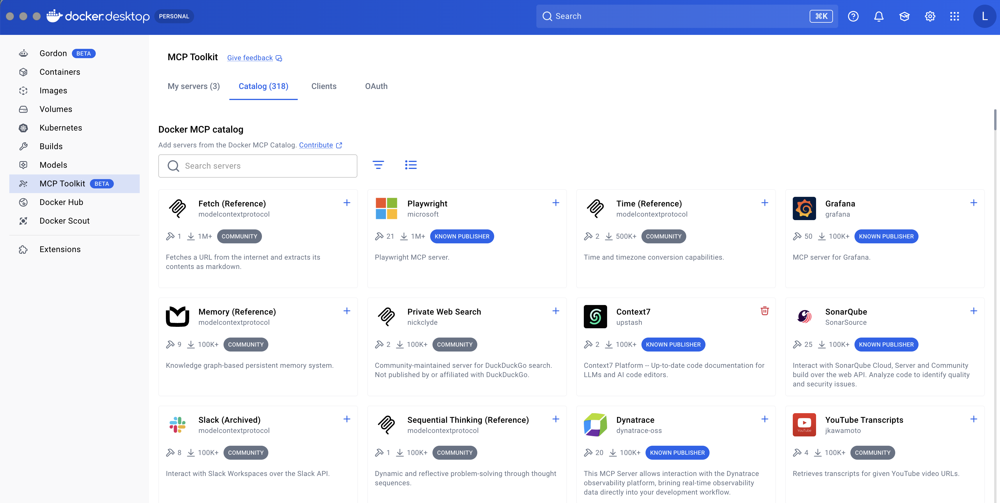
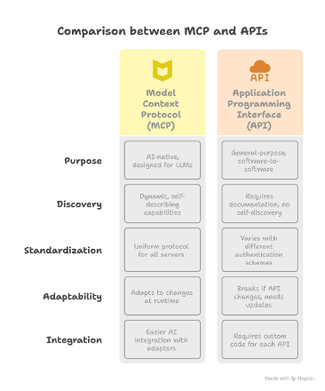

AI Agenter og automatisering
MCP (Model Context Protocol) is an open standard that lets AI applications discover and use external data sources, tools, and workflows through a common interface.


| MCP | CLI | |
|---|---|---|
| Token cost | High (~55K for GitHub) | Low (~4K) |
| Model familiarity | Must learn schemas at runtime | Pre-trained on billions of CLI examples |
| Composability | Limited | Natural (piping, chaining) |
| Best for | Discovery, permissions, non-CLI APIs | Reasoning-heavy agent tasks |
MCP Client Tool to an AI Agentstdio MCP:
HTTP MCP: